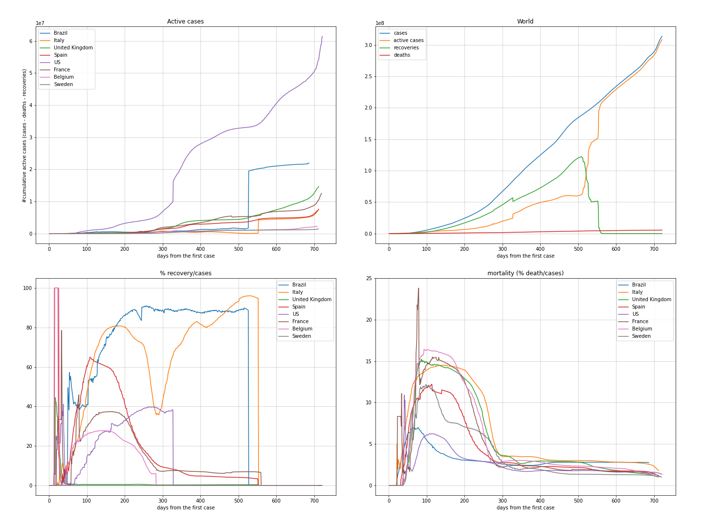

Estas análises são relativas aos dados da pandemia Covid19 no pelo mundoaté a data de 26/07/2020.
Estas informações são para uso próprio e não devem ser utilizadas para direcionamentos médicos e/ou políticas públicas.
Para não prejudicar a visualização dos dados, selecionei os seguintes países mais o Brasil para serem comparados entre si: Brazil, Italy, United Kingdom, Spain, Us, France, Belgium, Sweden
O ranking é feito a partir da quantidade total de mortes por cada mil habitantes de cada país.
| country | day | date | cases | case_day | deaths | death_day | perc_death | cases_million | deaths_million | avg7_case_day_million | avg7_death_day_million | avg7_recovery_day_million | |
|---|---|---|---|---|---|---|---|---|---|---|---|---|---|
| 1 | San Marino | 151 | 2020-07-26 | 699 | 0, | 42 | 0 | 6,01 | 20641,4 | 1240,3 | 0,000 | 0,000 | 4,214 |
| 2 | Belgium | 174 | 2020-07-26 | 66026 | 299, | 9821 | 0 | 14,87 | 5721,8 | 851,1 | 28,729 | 0,243 | 1,857 |
| 3 | United Kingdom | 178 | 2020-07-26 | 301020 | 750, | 45837 | 14 | 15,23 | 4457,6 | 678,8 | 9,857 | 0,957 | 0,029 |
| 4 | Andorra | 147 | 2020-07-26 | 897 | 0, | 52 | 0 | 5,80 | 11627,3 | 674,0 | 31,471 | 0,000 | 0,000 |
| 5 | Spain | 177 | 2020-07-26 | 272421 | 0, | 28432 | 0 | 10,44 | 5828,8 | 608,3 | 37,186 | 0,029 | 0,000 |
| 6 | Italy | 178 | 2020-07-26 | 246118 | 254, | 35107 | 5 | 14,26 | 4064,7 | 579,8 | 3,971 | 0,143 | 3,529 |
| 7 | Sweden | 178 | 2020-07-26 | 78997 | 0, | 5697 | 0 | 7,21 | 7871,1 | 567,6 | 24,429 | 1,114 | 0,000 |
| 8 | Peru | 143 | 2020-07-26 | 375961 | 0, | 17843 | 0 | 4,75 | 11564,3 | 548,8 | 98,286 | 20,471 | 113,800 |
| 9 | Chile | 155 | 2020-07-26 | 345790 | 2198, | 9112 | 92 | 2,64 | 18245,5 | 480,8 | 112,029 | 4,600 | 122,886 |
| 10 | France | 185 | 2020-07-26 | 217801 | 0, | 30195 | 0 | 13,86 | 3344,1 | 463,6 | 12,843 | 0,100 | 3,457 |
| 12 | Brazil | 152 | 2020-07-26 | 2419091 | 24578, | 87004 | 555 | 3,60 | 11462,2 | 412,2 | 217,071 | 5,086 | 239,529 |
O ranking é feito a partir da quantidade total de casos por cada mil habitantes de cada país.
| country | day | date | cases | case_day | deaths | death_day | perc_death | cases_million | deaths_million | avg7_case_day_million | avg7_death_day_million | avg7_recovery_day_million | |
|---|---|---|---|---|---|---|---|---|---|---|---|---|---|
| 1 | Qatar | 149 | 2020-07-26 | 109305 | 269, | 165 | 1 | 0,15 | 38595,4 | 58,3 | 134,029 | 0,429 | 133,500 |
| 2 | Bahrain | 154 | 2020-07-26 | 39131 | 384, | 140 | 3 | 0,36 | 23843,4 | 85,3 | 235,800 | 1,200 | 288,729 |
| 3 | San Marino | 151 | 2020-07-26 | 699 | 0, | 42 | 0 | 6,01 | 20641,4 | 1240,3 | 0,000 | 0,000 | 4,214 |
| 4 | Chile | 155 | 2020-07-26 | 345790 | 2198, | 9112 | 92 | 2,64 | 18245,5 | 480,8 | 112,029 | 4,600 | 122,886 |
| 5 | Oman | 154 | 2020-07-26 | 76005 | 1147, | 384 | 13 | 0,51 | 15277,4 | 77,2 | 268,329 | 1,886 | 324,343 |
| 6 | Kuwait | 154 | 2020-07-26 | 63773 | 464, | 433 | 4 | 0,68 | 15158,5 | 102,9 | 155,157 | 0,886 | 159,143 |
| 7 | Panama | 139 | 2020-07-26 | 60296 | 1432, | 1294 | 19 | 2,15 | 14199,2 | 304,7 | 229,686 | 6,657 | 190,057 |
| 8 | US | 187 | 2020-07-26 | 4233923 | 54953, | 146935 | 470 | 3,47 | 12738,1 | 442,1 | 198,000 | 2,757 | 71,657 |
| 9 | Armenia | 148 | 2020-07-26 | 37317 | 321, | 705 | 5 | 1,89 | 12616,8 | 238,4 | 117,857 | 3,100 | 153,786 |
| 10 | Andorra | 147 | 2020-07-26 | 897 | 0, | 52 | 0 | 5,80 | 11627,3 | 674,0 | 31,471 | 0,000 | 0,000 |
| 12 | Brazil | 152 | 2020-07-26 | 2419091 | 24578, | 87004 | 555 | 3,60 | 11462,2 | 412,2 | 217,071 | 5,086 | 239,529 |
Alguns países não estão no *dataset* da ONU, então não conseguimos analisá-los por sua populações. Estes podem ser encontrados fim do notebook data_engineering.ipynb.
Milhão de população normaliza os números de modo que a comparação entre países fique mais adequada. A média móvel nos permite ver descidas nas curvas, ou seja, quando a situação começa diminuir (ou melhorar) em um país.
É possível observar a agressividade da pandemia na Italia, Espanha e principalmente a da Bélgica, cujo líder se negou a fechar o país.


